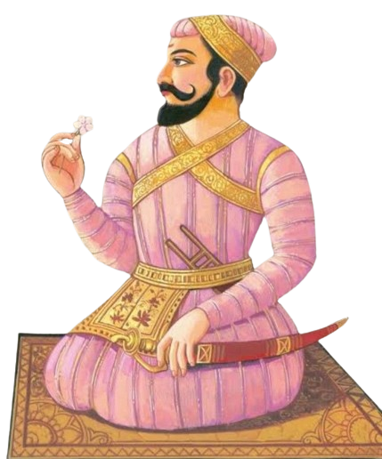
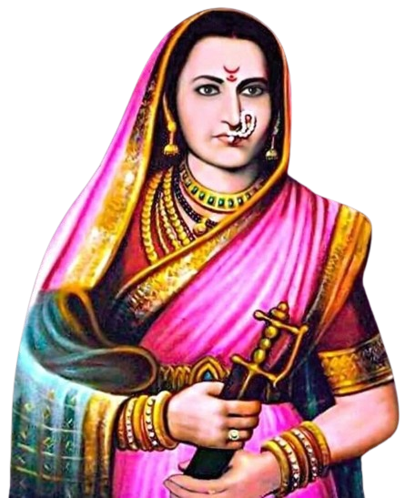
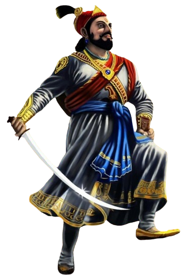

<div class="container-fluid">
  <div class="row">
    <div class="card">
      <div class="row" data-aos="fade-right" data-aos-duration="3000">
        <div class="col-xl-8 col-lg-8 col-md-8 col-sm-6 col-xs-6">
          <p class="head">शहाजीराजे भोसले -</p>
          <p class="text">
            शहाजीराजे भोसले हे पराक्रम, युद्धप्रसंगीची बुद्धिमत्ता, उत्तम
            प्रशासन, व स्वतंत्र राज्यकारभार या मूलभूत गुण-कौशल्य असलेले ऐतिहासिक
            व्यक्तिमत्त्व होते. मालोजी भोसले यांची पत्नी दीपाबाई (उमाबाई)हिच्या
            पोटी सिंदखेड इथे शहाजी यांचा जन्म झाला. त्यांच्या जन्माच्या वेळी
            त्यांच्या मातोश्री उमाबाईंनी अहमदनगरजवळील शहाशरीफ पीराला नवस
            बोलल्यामुळे त्यांनी आपल्या दोन्ही मुलांची नावे शहाजी व शरीफजी अशी
            ठेवली. ते पाच वर्षांचे असतानाच, वडील मालोजी राजे इंदापूरच्या
            लढाईमध्ये धारातीर्थी पडले. वडीलाच्या मृत्युनंतर शहाजी राजांना
            जहागिरी देण्यात आली. पुढे सिंदखेडराजा येथील लखुजीराव जाधव यांच्या
            मुलीशी म्हणजेच जिजाबाईंशी शहाजीराजे यांचा डिसेंबर इ.स. १६०५ मध्ये
            विवाह झाला. कालांतराने जसेजसे शहाजीराजे मोठे होत गेले, तसतशी
            पराक्रम, राजकारण, मुत्सद्देगिरी या बाबतीत त्यांची कीर्ती वाढत
            सर्वदूर पसरत गेली. शहाजी राजे व जिजाऊंना सहा मुले झाली. त्यापैकी
            दोनच वाचली. त्यात थोरले संभाजी राजे व धाकटे शिवाजी महाराज होत.
            भातवडीच्या युद्धात त्यांचे नाव भारतवर्षात दुमदुमले. मुघल शहेनशाहने
            इ.स.१६२४ लष्कर खानला १.२ लाखाचे सैन्यासह निजामशाही संम्पवण्यासाठी
            दक्षिणेस पाठविले, त्यास आदिलशहा ८० हजाराचे सैन्य घेऊन मिळाला.
            शहाजीराजांकडे २० हजाराचे सैन्य होते. त्यातील् १० हजार अहमदनगरच्या
            रक्षणासाठी ठेऊन, १० हजार त्यांनी स्वत:कडे ठेवले. एवढ्या मोठ्या
            सैन्याला प्रचंड पाणी लागेल म्हणून मुघल आणि आदिलशाही सैन्याने
            उत्तर-दक्षिण वहाणाऱ्या मेखरी नदीजवळ भातवडी येथे छावणी उभी केली. एरवी
            दुष्काळी असलेल्या अहमदनगरला तेव्हा चांगला पाऊस झाला होता.
            शहाजीराजांनी छावणीच्या उत्तरेस धरणाला असे तडे पाडले, की रात्री
            झोपलेल्या मुघल आणि आदिलशाही छावणीला काही कळण्यापूर्वीच छावणीची
            वाताहात झाली. अनेक योद्धे शहाजीराजांचे बंदी झाले. नंतर निजामशाही
            वजीर, जहान खानने, निजामाला मारले, आणि शहाजीराजाना निजामशाहीसाठी
            मिळवले. शहाजहानने दरम्यान निजामशाहीतील सगळ्या पुरुषाना ठार करवले.
            उद्देश असा की निजामशहीला वारस रहाणार नाही. तेव्हा शहाजीराजानी,
            निजामाच्या नात्यातील छोट्या मुर्तझाला गादीवर बसवून स्वत: कारभार हाती
            घेतला, व जणू स्वतःवरच छत्र धारण केले. ही घटना अहमदनगर जिल्ह्यातील,
            संगमनेर तालुक्यातील पेमगिरी किल्ल्यावर घडली. त्यांचा हा स्वतंत्र
            राज्यकारभार जवळजवळ ३ वर्षे टिकला होता. या भातवडीच्या विजयापासून
            दख्खनच्या राजकारणात शहाजीराजे यांचे महत्त्व वाढले. शहाजीराजांनी
            निजामशाहीत एकही वयस्क निजामशहा नसताना एका दहा वर्षाच्या मूर्तजा
            नावाच्या निजाम वंशातील मुलावर छत्र धरुन स्वातंत्र्याचा पहिला प्रयत्न
            केला. शहाजी महाराजांच्या या मोहिमेचा बंदोबस्त करण्यासाठी मोगल व
            आदिलशहांनी त्यांच्या विरोधात मोहिम आखली. जवळपास चार-पाच वर्षे संघर्ष
            केल्यावर पराभव झाला असतानादेखील रणदौलाखानाच्या मदतीने त्यांना
            आदिलशाहीची जहागिरी देण्यात आली. पराभव झाला तरी, एक मराठा सरदार राज्य
            करु शकतो हे दख्खनमधील सरदारामध्ये आत्मविश्वास निर्माण करण्याचे काम
            शहाजीराजे भोसले यांनी केले. शहाजीराजांना आदिलशहाने 'फर्जद' हा बहुमान
            दिला. शहाजी महाराज आदिलशाही राजवटीचे ताबेदार असले तरीही स्वदेश आणि
            स्वधर्म याविषयी त्यांच्या मनात प्रखर अभिमान जागृत होता. तिकडे
            शिवाजीच्या वाढत्या कारवायांना पायबंद घालण्यासाठी आदिलशाहीने, मुख्य
            वजीर नवाब मुस्तफाखान याने बाजी घोरपडे, मंबाजी भोसले, बाजी पवार,
            बाळाजी हैबतराव, फतहखान, आझमखान यांच्या साहाय्याने शहाजीराजांना दगा
            देऊन कर्नाटकातील जिंजीजवळ कैद केले. हे कळताच शिवाजी महाराजांनी
            मुत्सद्दीपणाने राजकारण करत दिल्लीत मोगल सुलतान शहाजहानला एक पत्र
            पाठवले. स्वतः आपण व आपले पिता शहाजीराजे हे दिल्लीपतीची चाकरी करू
            इच्छितात असे त्यांनीहिले. या बदल्यात शहाजीराजांची विजापूरच्या
            कैदेतून मुक्तता करावी ही अट घातली. अशा प्रकारे शिवाजी महाराजांनी
            शहाजीराजांच्या सुटकेसाठी दिल्लीच्या बादशहाला मधाचे बोट लावले होते.
            हा प्रयत्न यशस्वी ठरला. शहाजीराजांची दि. १६ मे, इ.स. १६४९ रोजी
            सन्मानपूर्वक सुटका झाली. शहाजीराजे आपल्या कारकिर्दित निझाम, मुघल आणि
            आदिल सत्तेत सरदार म्हणून राहिले तरी त्यान्ची महत्त्वाकांक्षा
            स्वतंत्र राज्य स्थापनेची होती. त्यानी तसा दोनदा प्रयत्न केला, पण
            त्यास यश नाही आले. त्यान्चे स्वप्न त्यांचे पुत्र शिवाजी (महाराष्ट्र)
            एकोजी (तन्जावर) यानी प्रत्यक्षात आणले. शहाजीराजे अतिशय विद्वान,
            पराक्रमी, धाडसी, दूरदृष्टी व कल्पक होते. राजनीती व समाजशास्त्रात
            पारंगत होते. शहाजी राजे कर्नाटकासारख्या ठिकाणी १५ ते २० हजारांची फौज
            बाळगून होते. तेथील जनतेच्या हितासाठी ते अहोरात्र लढत होते. तेथील
            प्रजा शहाजीराजांना आपला आधारस्तंभ मानत होती. शहाजीराजे व इतर सरदार
            बेदनूर प्रांताची मोहिम फत्ते करुन होदिगिरी गावी मुक्कामास आले असताना
            आदिवासी बांधवांनी त्यांना नरभक्षक वाघांनी माणसे मारल्याची तक्रार
            दिली. तेव्हा महाराज शिकारीसाठी बाहेर पडले असताना त्यांच्या घोड्याचा
            पाय नाल्यातील वेलीत अडकला आणि घोडा कोसळला. या घटनेत ते २३ जानेवारी
            १६६४ मध्ये मृत्युमुखी पडले.
          </p>
        </div>
        <div class="col-xl-4 col-lg-4 col-md-4 col-sm-6 col-xs-6 d-flex justify-content-center">
          
        </div>
      </div>
      <div class="row" data-aos="fade-left" data-aos-duration="3000">
        <div class="col-xl-4 col-lg-4 col-md-4 col-sm-6 col-xs-6 d-flex justify-content-center">
          
        </div>
        <div class="col-xl-8 col-lg-8 col-md-8 col-sm-6 col-xs-6">
          <p class="head">जिजाबाई शहाजी भोसले -</p>
          <p class="text">
            राजमाता जिजाबाई शहाजी भोसले (१२ जानेवारी इ.स. १५९८ - १७ जून , इ.स.
            १६७४) ह्या मराठा साम्राज्याचे संस्थापक छत्रपती शिवाजी महाराजांच्या
            आई होत्या. त्यांना राजमाता, राष्ट्रमाता, जिजाबाई किंवा जिजाऊ म्हणून
            संबोधले जाते. सिंदखेडचे लखुजी जाधव हे जिजाबाईंचे वडील व आईचे नाव
            म्हाळसाबाई होते.जाधव हे देवगिरीच्या यादव घराण्याचे वंशज होते.
            डिसेंबर इ.स. १६०५ मध्ये जिजाबाईंचा शहाजीराजांशी दौलताबाद येथे विवाह
            झाला.जिजाबाईंना एकूण सहा (६) अपत्ये होती. त्यापैकी ४ दगावली (मतभेद
            आहेत) व दोन मुलगे होते. त्यांचा थोरला मुलगा संभाजी हा शहाजी राजांजवळ
            वाढला तर शिवाजी राजांची संपूर्ण जबाबदारी जिजाबाईंवर होती. जिजाबाईंना
            पहिले अपत्य झाले त्याचे नाव तो सहा महिन्याचा झाल्यानंतर आपल्या मृत
            दीराच्या नावाप्रमाणे संभाजी ठेवले. त्‍यानंतर त्यांना ४ मुले झाली;
            चारही दगावली. ७ वर्षाचा काळ निघून गेला. १९ फेब्रुवारी १६३०, फाल्गुन
            वद्य तृतीया, शके १५५१ या दिवशी सूर्यास्ताच्या वेळी शिवनेरी येथे
            जिजाबाई यांना मुलगा झाला. मुलाचे नाव शिवाजी ठेवले. शिवाजी महाराज १४
            वर्षांचे असताना शहाजीराजांनी त्यांच्या हाती पुण्याची जहागीर सुपूर्त
            केली. अर्थातच जहागीरीची वहिवाट लावण्याची जबाबदारी जिजाबाईंवर येऊन
            पडली. कुशल अधिकाऱ्यांसमवेत जिजाबाई आणि शिवाजी पुण्यात येऊन दाखल
            झाले. निजामशाही, आदिलशाही आणि मुघलांच्या सततच्या स्वाऱ्यांमुळे
            पुण्याची अवस्था अतिशय भीषण होती. अशा प्रतिकूल परिस्थितीत त्यांनी
            जिजाऊ यांच्या सोबत नेटाने पुणे शहराचा पुनर्विकास केला. सोन्याचा
            नांगर घडवून त्यांनी शेतजमीन नांगरली, स्थानिक लोकांना अभय दिले.
            शिवाजीच्या राजांच्या शिक्षणाची जबाबदारी पेलली. जिजाबाईंनी शिवरायांना
            पारतंत्र्यात सुरू झालेल्या आणि स्वातंत्र्यात संपलेल्या रामायण,
            महाभारतातील गोष्टी सांगितल्या. सीतेचे हरण करणाऱ्या रावणाचा वध करणारा
            राम किती पराक्रमी होता, बकासुराचा वध करून दुबळ्या लोकांची सुटका
            करणारा भीम किती पराक्रमी होता, वगैरे. जिजाबाईंनी दिलेल्या या
            संस्कारांमुळेच शिवाजीराजे घडले. जिजाबाईंनी नुसत्या गोष्टीच
            सांगितल्या नाहीत तर सदरेवर शेजारी बसवून राजकारणाचे पहिले धडेही दिले.
            शिवरायांच्या मनात कर्तृत्वाची ठिणगी टाकतानाच जिजाबाईंनी त्यांना
            राजनीतीही शिकविली. समान न्याय देण्याची वृत्ती आणि अन्याय करणाऱ्याला
            कठोरात कठोर शिक्षा देण्याचे धाडस दिले . शस्त्रास्त्रांच्या
            प्रशिक्षणावर स्वतः बारकाईने लक्ष ठेवले . शहाजीराजांची कैद व सुटका,
            अफजलखानाचे संकट, आग्रा येथून सुटका अशा अनेक प्रसंगांत शिवरायांना
            जिजाबाईंचे मार्गदर्शन लाभले. शिवराय मोठ्या मोहिमांवर असताना, खुद्द
            जिजाबाई राज्यकारभारावर बारीक लक्ष ठेवत असत. आपल्या जहागिरीत त्या
            जातीने लक्ष घालत. सदरेवर बसून स्वतः तंटे सोडवत.
          </p>
        </div>
      </div>
      <div class="row" data-aos="fade-right" data-aos-duration="3000">
        <div class="col-12">
          <p class="head">छत्रपती शिवाजी महाराजांची पत्नी -</p>
          <p class="text">
            महाराजांचा पहिला विवाह सईबाई निंबाळकर यांच्याशी झाला. त्यांनी नंतर
            सोयराबाई मोहिते, पुतलाबाई पालकर, सकवारबाई गायकवाड, काशीबाई जाधव आणि
            सगुणाबाई शिंदे यांच्याशी विवाह केला. त्यांचा विवाहही गुणवंतीबाई
            इंगळे आणि लक्ष्मीबाई विचारे यांच्याशी झाला होता. सईबाईंनी एक मुलगा
            संभाजी (1657 ते 1689) आणि सोयराबाई यांना राजाराम (1670 ते 1700)
            यांना जन्म दिला. याशिवाय महाराजांना काही मुलीही होत्या.
          </p>
        </div>
      </div>
      <div class="row" data-aos="fade-left" data-aos-duration="3000">
        <div class="col-xl-4 col-lg-4 col-md-4 col-sm-6 col-xs-6 d-flex justify-content-center">
          
        </div>
        <div class="col-xl-8 col-lg-8 col-md-8 col-sm-6 col-xs-6">
          <p class="head">संभाजी शिवाजी भोसले -</p>
          <p class="text">
            छत्रपती संभाजी महाराजांचा जन्म १४ मे १६५७ रोजी किल्ले पुरंदर येथे
            झाला. राजपुत्र असल्यामुळे रणांगणावरील मोहिमा आणि राजकारणातील डावपेच
            यांचे बाळकडू त्यांना लहानपणापासूनच मिळाले. संभाजी महाराजांच्या आई,
            महाराणी सईबाईंचे निधन महाराज लहान असतानाच झाले. त्यानंतर पुण्याजवळील
            कापूरहोळ गावची धाराऊ ही स्त्री त्यांची दूध आई बनली. संभाजी
            महाराजांचा सांभाळ त्यांची आजी राजमाता जिजाबाई यांनी केला. त्यांच्या
            सावत्र आई, पुतळाबाई यांनी देखील त्यांच्यावर खूप माया केली. मात्र
            त्यांंची सावत्र आई सोयराबाई यांनी संंभाजी महाराजांना पोरकेेेपणाने
            वागवले तसेच संभाजी महाराजांच्या राजकीय कारकिर्दीत ढवळाढवळ करण्याचा
            प्रयत्न केला. अनेक ऐतिहासिक नोंदींप्रमाणे संभाजी महाराज अत्यंत देखणे
            आणि शूर होते. तसेच ते अनेक भाषांत विद्याविशारद व अत्यंत धुरंदर
            राजकारणी होते. राजकारणातील बारकावे त्यांनी भराभर आत्मसात केले होते.
            मुघल दरबारातील घडामोडी आणि राजकारण त्यांना लहान वयातच कळले तर त्याचा
            त्यांना भविष्यात उपयोग होईल या विचाराने शिवाजी महाराजांनी त्यांना
            आग्रा भेटीच्या वेळी बरोबर नेले. त्यावेळी संभाजीराजे ९ वर्षाचे होते.
            शिवाजी महाराज कैदेतून निसटल्यानंतर स्वराज्यापर्यंतची धावपळ संभाजी
            राजांनी सोसू नये आणि त्यामुळे त्यांना काही काळ सुरक्षित ठिकाणी ठेवणे
            गरजेचे होते. त्यामुळे शिवाजी महाराजांनी त्यांना मोरोपंत पेशव्यांच्या
            मेहुण्याच्या घरी मथुरेला ठेवले. मुघल सैनिकांचा संभाजी राजांच्या
            मागचा ससेमिरा थांबवण्याच्या उद्देशाने शिवाजी महाराजांनी
            संभाजीराजांचे निधन झाल्याची अफवा पसरवून दिली. ते महाराष्ट्रात
            पोहोचल्यानंतर काही काळाने संभाजी महाराज सुखरूपपणे स्वराज्यात येऊन
            पोहोचले. इ.स. १६७४ मध्ये शिवाजी महाराजांचा राज्याभिषेक झाला तोपर्यंत
            संभाजीराजे राजकारणातील लहान बारकावे आणि रणांगणातील डावपेचांमध्ये
            तरबेज झाले होते. त्यांच्या विनम्र स्वभावाने राज्याभिषेकासाठी
            रायगडावर आलेल्या प्रतिनिधींना त्यांनी आपलेसे केले. शिवाजी महाराजांचा
            राज्याभिषेक झाल्यानंतर १२ दिवसात जिजाऊंचे निधन झाले. त्यानंतर
            संभाजीराजांकडे मायेने लक्ष देणारे कोणी राहिले नाही. शिवाजी महाराज
            स्वराज्याच्या राजकारणात आणि रणांगणावर गुंतले होते. तरुण
            संभाजीराजांचे शिवाजी महाराजांच्या दरबारातील अनुभवी मानकऱ्यांशी
            अनेकदा मतभेद होऊ लागले. संभाजी महाराजांचा अमात्य अण्णाजी दत्तोंच्या
            कारभाराला सक्त विरोध होता. शिवाजी महाराजांनी अण्णाजी हे अनुभवी आणि
            कुशल प्रशासक असल्यामुळे त्यांच्या भ्रष्ट कारभाराकडे अनेकदा दुर्लक्ष
            केले. पण संभाजी महाराजांना ते मान्य होणे कठीण होते. अण्णाजी दत्तो
            आणि इतर अनुभवी मानकरी संभाजी महाराजांच्या विरोधात गेले. दरबारातील
            काही मानकरी संभाजी महाराजांना अपमानास्पद वागणूक देऊ लागले; हे केवळ
            अण्णाजी दत्तोंच्या सांगण्यावरून केले. त्यांच्या विरोधामुळे त्यांना
            शिवाजी महाराजांबरोबर दक्षिण हिंदुस्थानच्या मोहिमेवर जाता आले नाही.
            तसेच शिवाजी महाराजांच्या अनुपस्थितीत संभाजी महाराजांचे हुकूम
            पाळण्यास अष्टप्रधानमंडळाने नकार दिला. त्यामुळे शिवाजी महाराजांना
            कोकणातील शृंगारपूरचे सुभेदार म्हणून संभाजी महाराजांना पाठवावे
            लागले.श्री शंभो: शिवजातस्य मुद्राद्यौरिव राजते | यदं कसेविनी लेखा
            वतर्ते कस्यनोपरि || अर्थ: छत्रपती शिवरायांचे पुत्र छत्रपती संभाजी
            महाराज यांची ही राजमुद्रा जणू काही स्वर्गीय तेजाने तळपत आहे,
            आकाशाप्रमाणे अमर्याद आहे. या राजमुद्रेच्या आश्रयात प्रत्येक माणूस,
            प्रत्येक प्राणिमात्र महाराजांच्या छत्रछायेखाली असेल. छत्रपतींच्या या
            राजमुद्रेपेक्षा कोणीही श्रेष्ठ नाही. संभाजी महाराजांना
            साधुसंतांबद्दल आदरभाव होता. ज्येष्ठ मांत्रिक कुडाळ ग्रामनिवासी
            नामदेवभट्टपुत्र बाकरेशास्त्री यांना करून दिलेल्या संस्कृतमधील
            दानपत्रावरून त्यांचा आदरभाव कळतो. छत्रपती संभाजी महाराजांना राजपद
            महत्‌प्रयासाने प्राप्त झाले होते. त्यांनी राजपद प्राप्तीसाठी नवस
            केला होता आणि त्यांना राज्याधिकार मिळाल्यानंतर तो नवस फेडण्याच्या
            इच्छेने त्यांनी नामदेवभट्टपुत्र बाकरेशास्त्री (ज्यांना संभाजी महाराज
            स्वामी म्हणतात) यांना दरसाल १०,००० पादशाही होनांचे संस्कृत दानपत्र
            करून दिले. हे दानपत्र संभाजी महाराजांच्या मंचाकारोहणानंतर एका
            महिन्याने म्हणजे दि. २४ ऑगस्ट १६८० (भाद्रपद शुद्ध १० सोमवार शके
            १६०२) रोजी केले आहे. दानपत्र ३०० से.मी. लांब आणि २३.५ से.मी. रुंद
            आहे. या दानपत्राच्या सर्वात वर मधोमध संभाजी महाराजांची १६ बुरुजी
            मुद्रा आहे व खाली सुवाच्य अक्षरात संस्कृतमध्ये २ ओळी लिहिल्या आहेत.
            त्या स्वतः शंभूराजांच्या हस्ताक्षरातील आहेत. त्या ओळी खालीलप्रमाणे :
            || मतं मे श्री शिवराजपुत्रस्य श्रीशंभूराज || || छत्रपते:
            यद्त्रोपरिलेखितं || छं || श्री || यात ते तत्कालीन दानपत्र लेखन
            पद्धतीप्रमाणे आपल्या पूर्वजांच्या व स्वतःच्या पराक्रमाचे व
            सद्गुणांचे वर्णन अतिशय सार्थ अशा शब्दांमध्ये करतात. आपले पणजोबा
            मालोजीराजे यांना शूरश्रेष्ठ व देवब्राम्हण प्रतिपालक असे संबोधतात तर
            आपले आजोबा महाराज शाहजीराजांस निशायुद्धप्रवीण, तसेच
            'हैन्दवधर्मजीर्णोद्धाकरणघृतमति' म्हणजे स्वतःचा जीव धोक्यात घालून
            हिंदवी (हिंदू) धर्माचा जीर्णोद्धार करणारा असे संबोधतात. आपले वडील
            श्री छत्रपती शिवाजी महाराजांचा उल्लेख 'म्लेंव्छक्षयदीक्षित' म्हणजे
            आपल्या तारुण्यातच ज्यांनी म्लेंछ क्षयाची दीक्षा घेतली व अनेक
            ताम्रांना पराभूत केले असा करतात. यावरून छत्रपती संभाजी महाराजांना
            आपल्या पराक्रमी पूर्वजांविषयी वाटणाऱ्या भावनेचे यथार्थ दर्शन होते.
          </p>
        </div>
      </div>
    </div>
  </div>
</div>
